Christmas Cake
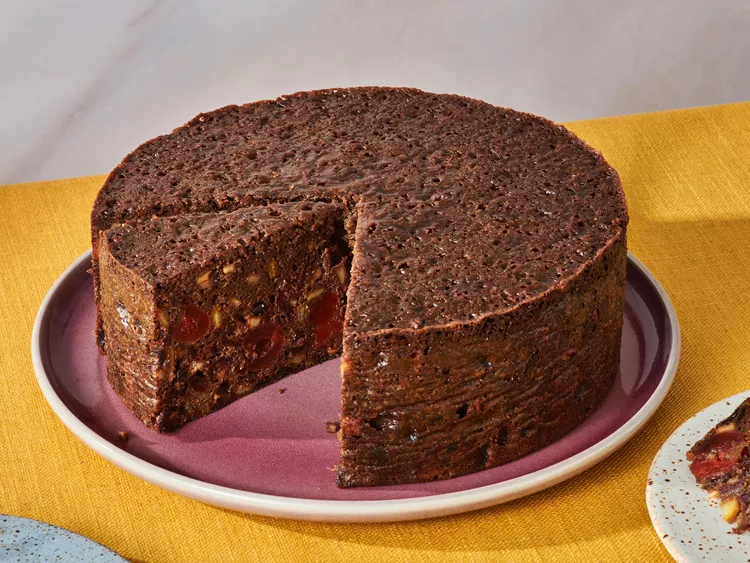
Description
This Christmas cake is made with dried fruits and candied citrus peel soaked in brandy to add flavor and make a rich, moist fruitcake that's very popular at Christmas.
Delicious as-is or cover it with almond paste and royal icing for a more festive touch.
Ingredients
- 2 (8 ounce) containers candied cherries
- (8 ounce) container candied mixed citrus peel
- 2 (2.25 ounce) packages blanched slivered almonds
- 2 cups raisins
- 1 cup dried currants
- 1 cup dates, pitted and chopped
- ½ cup brandy
- 2 ½ cups all-purpose flour, divided
- 1 teaspoon ground cloves
- 1 teaspoon ground allspice
- 1 teaspoon ground cinnamon
- ½ teaspoon baking soda
- ½ teaspoon salt
- ¾ cup molasses
- ¾ cup apple juice
- 1 cup unsalted butter, softened
- 2 cups packed brown sugar
- 6 large eggs
Steps
- Gather all ingredients.
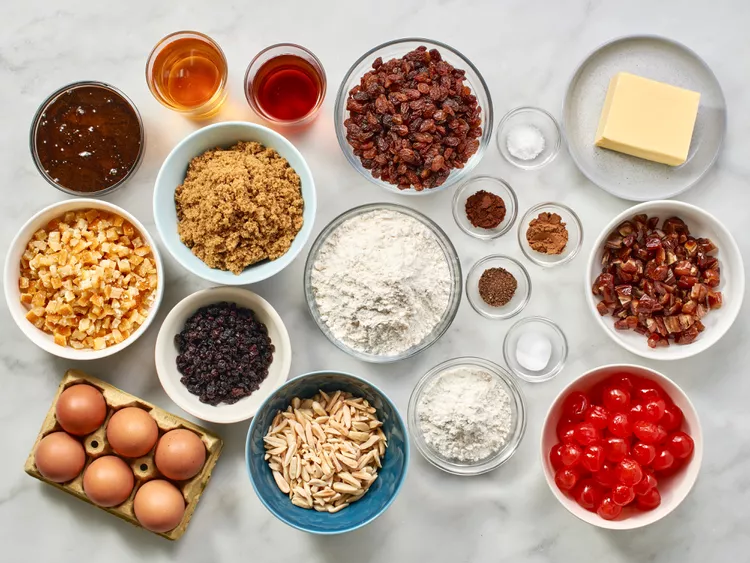
- Combine candied cherries, citrus peel, and almonds in a medium bowl.
Add raisins, currants, and dates; pour in brandy and stir to combine. Cover and let sit for 2 hours or overnight.
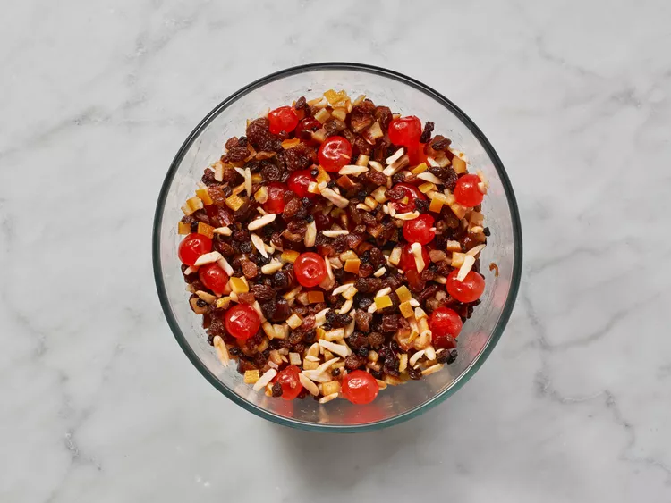
- When ready to bake, preheat the oven to 275 degrees F (135 degrees C). Grease a deep 8-inch fruitcake pan, line it with parchment paper, and grease again.
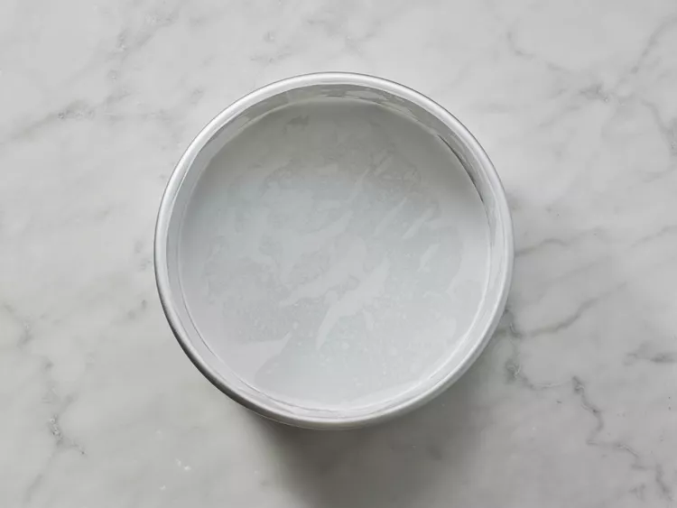
- Dredge brandy-soaked fruit with 1/2 cup flour.
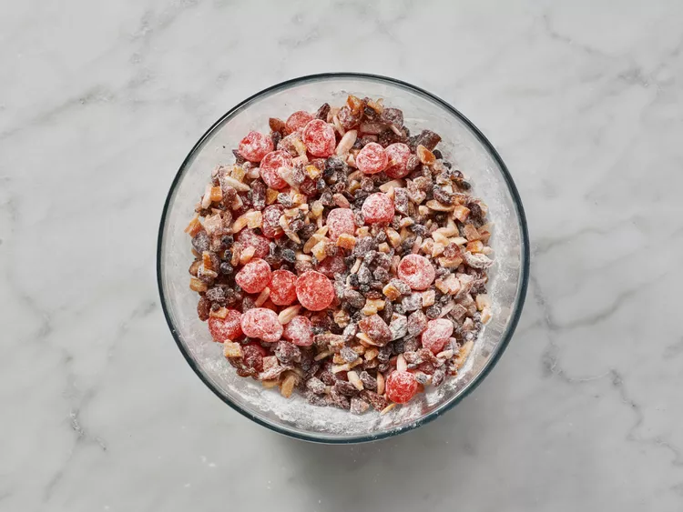
- Whisk together remaining 2 cups flour, cloves, allspice, cinnamon, baking soda, and salt in a medium bowl.
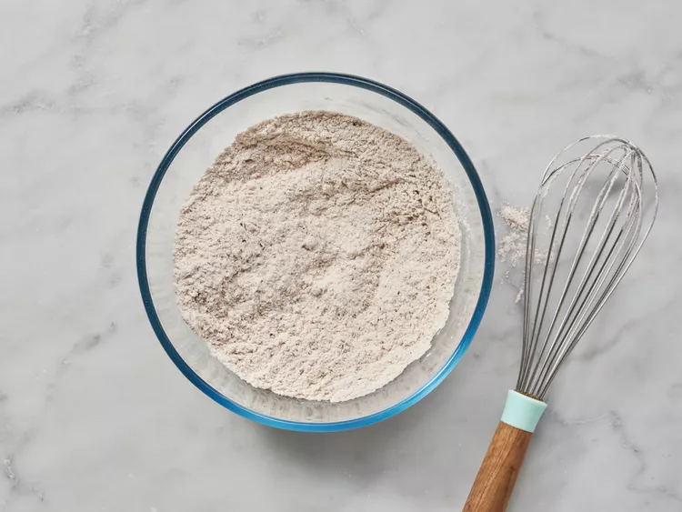
- Stir molasses and apple juice together in a separate bowl until combined.
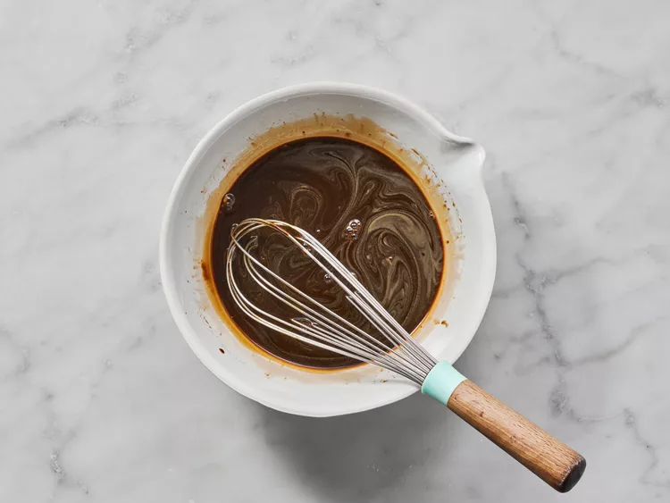
- Cream butter in a large bowl until light and fluffy. Gradually blend in brown sugar and eggs.
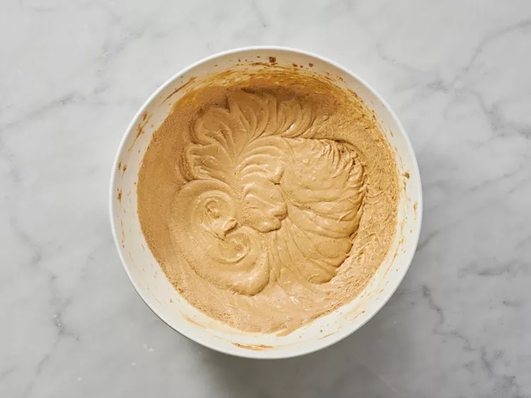
- Add flour mixture in 4 batches, alternating with molasses mixture.
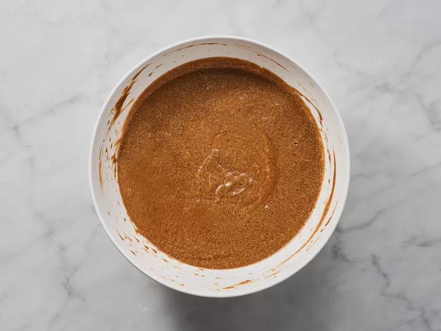
- Fold in floured fruit, then turn batter into the prepared pan.
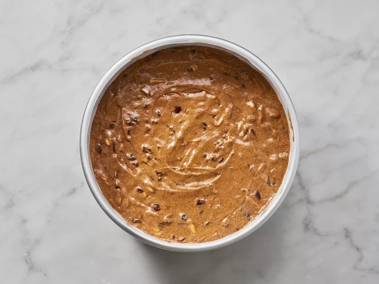
- Bake in the preheated oven until a toothpick inserted into the center of the cake comes out clean, 3 to 3 1/2 hours.
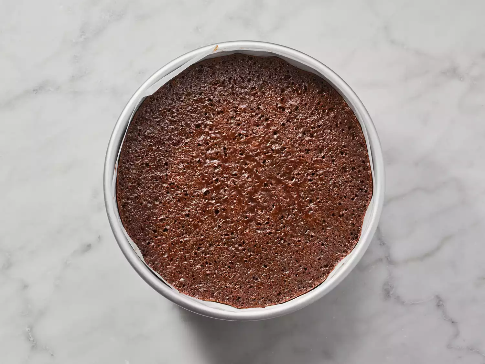
- Remove cake from the pan, and lift off the parchment paper.
Cool cake completely, then wrap loosely in waxed paper. Store in an airtight container in a cool, dry place for up to 2 months, or in the refrigerator for longer.
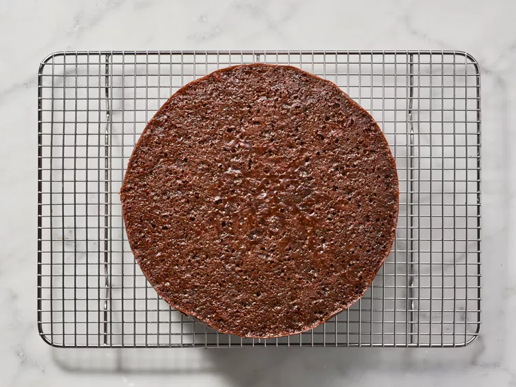